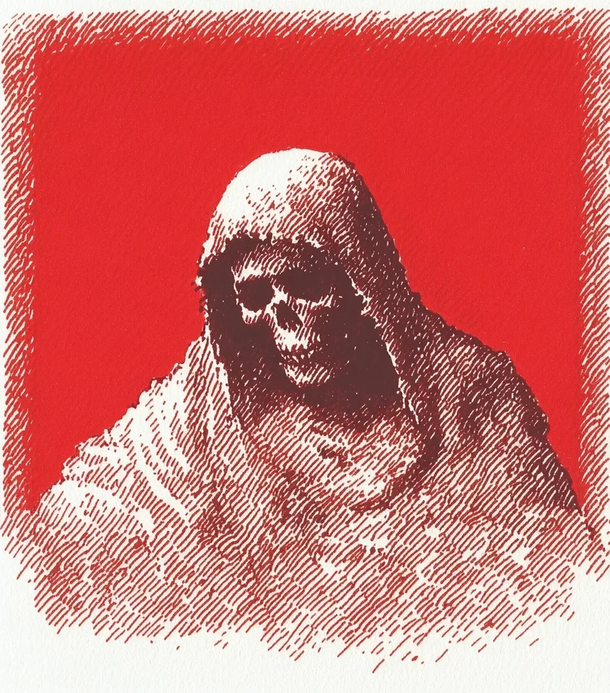

우리 세상에서 죄는 무게가 있었다—죄가 무거울수록, 죄인 주변의 현실을 더 많이 왜곡시켰다.
[Sins had weight in our world—the heavier the transgression, the more it bent reality around the sinner.]
여자는 창문에서 시장 위로 어둠이 내려앉는 것을 지켜보았다. 그 어둠과 함께 심판이 임박했음을 알리는 익숙한 진홍색 안개가 찾아왔다. 그녀의 손가락은 팔뚝을 가로지르는 주홍색 흉터를 더듬었다—그것은 자신의 것이 아닌 죄를 만졌던 과거 수집의 영구적인 흔적이었다.
[The woman watched from her window as darkness descended over the marketplace, bringing with it the familiar crimson fog that signaled a judgment was imminent. Her fingers traced the scarlet scars that snaked across her forearms—permanent marks from past collections where she had touched sins not meant for her.]
이 흉터들은 그녀에게 특별한 시력을 부여했다; 다른 사람들은 단지 안개만 볼 때, 그녀는 진실을 인식했다: 찢어진 그림자를 두른 해골 형상, 지식으로 타오르는 텅 빈 눈구멍.
[These scars granted her unusual sight; where others saw only mist, she perceived the truth: a skeletal figure cloaked in tattered shadows, hollow sockets burning with knowledge.]
진홍의 심판관이 마땅히 받아야 할 것을 거두러 왔다.
[The Crimson Judge had arrived to collect what was due.]
시장은 고요해졌고, 상인들과 손님들은 마치 겨울의 손아귀에 잡힌 피 없는 조각상처럼 그 자리에 얼어붙었다.
[The marketplace fell silent, vendors and patrons alike frozen in place like bloodless statues caught in winter’s grip.]
이 순간적인 시간 정지 속에서 오직 그 여자만이 자유롭게 움직일 수 있었다—그녀의 흉터 있는 피부가 심판관의 시간 능력으로부터 면역력을 부여했기 때문이다. 그녀는 상인의 죄, 특히 세 명의 목숨을 앗아간 보복성 배신이 악의 심장처럼 뛰는 중앙 광장을 향해 나아갔다.
[The woman alone moved freely through this momentary suspension of time—her scarred skin granting her immunity to the Judge’s temporal power. She advanced toward the center square where a merchant’s sin—a particularly vindictive betrayal that had cost three lives—pulsed like a malignant heart.]
그 죄는 결정체 형태로 응집되어 있었는데, 동시에 아름답고 혐오스러웠다. 그 결정체의 면들은 달빛을 포착하여 피투성이 조명의 들쭉날쭉한 파편으로 변질시켰다.
[The transgression had coalesced into crystalline form, beautiful and repulsive simultaneously, its facets capturing and corrupting the moonlight into jagged shards of bloody illumination.]
수년간 죄의 수집을 목격하면서, 그녀는 근본적인 진실을 배웠다: 행위가 더 사악할수록, 그 현현은 더 정교해진다—순수함과 타락이 비정상적인 결합 속에 갇혀 있는 것이다.
[In her years of witnessing collections, she had learned a fundamental truth: the more wicked the deed, the more exquisite the manifestation—purity and corruption locked in perverse matrimony.]
아셴 형제는 연금술사의 가게 뒤에 숨어 있었고, 광신자의 메달을 너무 꽉 쥐고 있어서 그것이 그의 손바닥에 반달 모양의 자국을 새겼다.
[Brother Ashen lurked behind the alchemist’s shop, his zealot’s medallion clenched so tightly in his fist that it carved half-moons into his palm.]
다른 이들이 진홍의 심판관의 일에서 구원을 보는 곳에서, 그는 오직 혐오스러운 것만 인식했다.
[Where others saw salvation in The Crimson Judge’s work, he perceived only abomination.]
“죄는 신성한 용서를 받기 위한 것이지, 불경한 손에 의해 수집되기 위한 것이 아니다,"라고 그는 비밀 집회에서 설교했다. 그의 추종자들은 많아졌지만 그들의 이해는 얕았다.
["Sins are meant for divine forgiveness, not collection by unholy hands,” he had preached in secret assemblies. His followers grew numerous while their understanding remained shallow.]
그들은 해골 수확자가 어떤 악의적인 목적을 위해 죄를 모은다고 믿었고, 수집이 없다는 것은 균형이 없다는 것을 의미한다는 사실을 결코 이해하지 못했다.
[They believed the skeletal harvester hoarded sins for some malevolent purpose, never grasping that absence of collection meant absence of balance.]
여자는 더 잘 알고 있었다—그녀는 한때 심판 없는 마을이 수집되지 않은 죄의 무게 아래 무너지는 것을 목격했었다. 수집자가 그것을 가져가지 않으면 죄가 결정화되면서 공기 자체가 두껍고 독성이 있게 변했다.
[The woman knew better—she’d once witnessed a village without judgment crumble under the weight of uncollected transgressions, the very air becoming thick and poisonous as sin crystallized without a collector to claim it.]
진홍의 심판관은 앞으로 떠다녔고, 응고된 그림자와 말라붙은 피로 짜여진 듯한 풍성한 로브 아래에서 뼈가 부드럽게 딸깍거렸다.
[The Crimson Judge drifted forward, bones clicking softly beneath voluminous robes that seemed woven from congealed shadow and dried blood.]
그것은 결정화된 죄를 향해 해골 같은 손가락을 뻗었고, 여자는 마치 현실 자체가 수집의 순간에서 움츠러드는 것처럼 공기가 압축되는 것을 느꼈다.
[It extended skeletal fingers toward the crystallized sin, and the woman felt the air compress, as if reality itself recoiled from the moment of collection.]
“기다려요,” 그녀는 속삭였고, 그녀의 목소리는 부드러움에도 불구하고 울려 퍼졌다. 심판관은 멈추었고, 빈 눈구멍이 친숙한 인식과 함께 천천히 그녀를 향해 돌아갔다.
[“Wait,” she whispered, her voice carrying despite its softness. The Judge paused, empty eye sockets turning slowly toward her with familiar recognition.]
수년 전, 그녀는 목격자로 표시되었다—수집 과정을 인식하고 흉터만을 증거로 남긴 채 살아남을 수 있는 희귀한 인간 중 하나였다. 완전히 하인도 아니고 완전히 분리된 것도 아닌, 그녀는 세계 사이의 필요한 공간을 차지했다—다른 이들이 볼 수 없는 것을 관찰하고, 왜 수집이 계속되어야 하는지에 대한 지식을 보존하는.
[Years ago, she had been marked as a Witness—one of the rare mortals who could perceive the collection process and survive with only scars as testament. Neither fully servant nor entirely separate, she occupied a necessary space between worlds—observing what others could not see, preserving the knowledge of why collections must continue.]
“당신은 멈출 수 없고 멈추어서는 안 되는 것을 멈추려 하는군요,” 심판관은 선언했고, 그 목소리는 신중한 억양과 차가운 위안을 담고 있었다.
[“You seek to stop what cannot and should not be stopped,” the Judge pronounced, its voice carrying careful cadence and cold comfort.]
“죄는 잘라내고 봉인되어야 합니다, 그렇지 않으면 씨를 뿌리고 퍼질 것입니다.” 결정체 현현은 아셴 형제가 숨어있던 곳에서 나타나자 더 밝게 맥동했다. 그의 얼굴은 의로운 분노로 일그러져 있었고, 의식용 칼을 하얗게 된 손으로 꽉 쥐고 있었다.
[“Sins must be severed and sealed, lest they seed and spread.” The crystalline manifestation pulsed brighter as Brother Ashen emerged from hiding, his face twisted with righteous fury, a ceremonial blade clutched in white-knuckled hands.]
“당신의 기만의 통치는 오늘 밤 끝납니다, 악마,” 그는 으르렁거렸다. 수집가를 파괴하면 죄가 수집되지 않은 채로 남아, 그 무게가 결국 축적된 범죄 아래 세상을 짓누를 것이라는 사실을 알지 못했다.
[“Your reign of deception ends tonight, demon,” he snarled, unaware that destroying the collector would leave sins unclaimed, their weight eventually crushing the world beneath accumulated transgressions.]
파괴를 통한 구원이라는 그의 의도와는 정반대로, 잘못된 보존을 통해 전멸만 이룰 수 있다.
[The antithesis of his intention—salvation through destruction—would achieve only annihilation through misguided preservation.]
여자는 그들 사이로 움직였고, 그녀의 흉터 있는 팔을 대립하는 힘 사이의 장벽처럼 들어올렸다. “수확자를 죽이면 우리 모두를 죽이는 것입니다,” 그녀는 말했고, 그녀의 조용한 확신은 그의 열성적인 분노보다 더 강력했다.
[The woman moved between them, her scarred arms raised like a barrier between opposing forces. “Kill the harvester and you kill us all,” she stated, her quiet certainty more powerful than his zealous rage.]
“죄가 수집되지 않으면 죄가 배가됩니다.” 그녀는 아셴 형제를 향해 돌아서서, 그의 시선을 마주 보았다. “저도 한때 당신처럼 의심했습니다. 저도 한때 당신처럼 칼을 들었습니다.” 그녀는 흉터 있는 팔을 그에게 내밀었다.
[“Sins uncollected become sins multiplied.” She turned to face Brother Ashen, holding his gaze. “I once doubted as you do. I once raised a blade as you do now.” She extended her scarred arms toward him.]
“이것들은 제가 그 실수를 한 것에 대한 상기물입니다—제가 수집을 방해하고 인간의 손이 결코 만져서는 안 될 것을 만졌을 때의.” 그들 주변에서, 시간은 여전히 얼어붙어 있었다—손님들은 걸음 중간에 멈춰 있고, 상인들은 흥정 중간에 멈춰 있으며, 떨어진 동전은 돌바닥 위 몇 인치 위에 떠 있었다.
[“These are my reminder of that mistake—when I interfered with a collection and touched what was never meant for mortal hands.” Around them, time still stood frozen—patrons suspended mid-step, merchants halted mid-bargain, a dropped coin hovering inches above cobblestone.]
아셴 형제는 주저했고, 그의 확신이 흔들렸다. “그들에게… 무슨 일이 일어나나요?” 그는 결정화된 죄를 향해 고개를 끄덕이며 물었고, 그의 목소리는 갑자기 작아졌다.
[Brother Ashen faltered, his certainty wavering. “What… what happens to them?” he asked, nodding toward the crystallized sin, his voice suddenly small.]
“균형은 빛과 그림자 모두를 필요로 합니다,” 심판관이 말했고, 그들 사이의 얼어붙은 세상을 감싸는 듯한 해골 손을 들어올렸다. “어둠은 어둠을 삼킵니다; 수집된 것은 보존되는 것이 아니라 소비됩니다.”
[“Balance requires both light and shadow,” the Judge intoned, raising skeletal hands that seemed to frame the frozen world between them. “Darkness devours darkness; what is collected is not preserved but consumed.”]
여자는 고개를 끄덕이며, 그녀가 수없이 목격했던 설명을 완성했다: “무(無)로 돌아간 각각의 죄는 열 개 더 형성되는 것을 막습니다. 심판관 없이는, 정의가 없습니다—오직 축적만이 있을 뿐입니다.”
[The woman nodded, completing the explanation she had witnessed countless times: “Each sin returned to nothingness prevents ten more from forming. Without the Judge, there is no justice—only accumulation.”]
아셴 형제의 칼은 의심이 그의 표정을 스쳐 지나가면서 약간 낮아졌다. 여자는 그 순간을 알아보았다—수년 전 그녀 자신의 광신이 그녀에게 흉터와 통찰력 모두를 안겨주었을 때 그녀가 직면했던 것과 같은 깨달음이었다.
[Brother Ashen’s blade lowered slightly as doubt crept across his features. The woman recognized the moment—the same realization she had faced years ago when her own zealotry had earned her both scars and insight.]
어둠이 그들 사이에서 소용돌이쳤고, 그것은 악의적인 것이 아니라 필요한 것이었다—마치 그림자가 빛의 존재를 증명하는 것처럼.
[Darkness swirled between them, not malevolent but necessary—just as shadow proves light’s existence.]
심판관의 해골 손이 결정화된 죄를 감쌌고, 그것은 무수한 진홍색 파편으로 부서져 위로 나선형을 그리며 올라가, 그 존재의 빈 늑골 안으로 사라지면서 무(無)로 용해되었다.
[The Judge’s skeletal hand closed around the crystallized sin, which shattered into countless crimson fragments that spiraled upward, dissolving into nothingness as they disappeared into the entity’s empty ribcage.]
파괴가 아무것도 만들어내지 않는 곳에서, 수집은 가능성을 창조했다.
[Where destruction created nothing, collection created possibility.]
아셴 형제는 무릎을 꿇었고, 칼은 돌바닥에 쓸모없이 부딪혔다. 마침내 그의 광신에 이해가 스며들었다.
[Brother Ashen fell to his knees, blade clattering uselessly against stone, as understanding finally penetrated his zealotry.]
여자는 단지 고개를 끄덕였다. 그녀가 항상 알고 있었던 것을 인정했다: 어떤 짐들은 그것을 짊어지도록 설계된 이들에 의해 운반되어야 하고, 어떤 지식은 인간의 어깨에게는 너무 무겁다.
[The woman merely nodded, acknowledging what she had always known: some burdens must be carried by those designed to bear them, and some knowledge is too heavy for mortal shoulders.]
시장이 그들 주변에서 점차 생기를 되찾아가는 동안, 시민들은 일어났던 우주적 거래를 알지 못했고, 그녀는 아셴 형제가 일어서도록 도왔다.
[As the marketplace gradually returned to life around them, citizens unaware of the cosmic transaction that had occurred, she helped Brother Ashen to his feet.]
아마도 시간이 지나면, 그는 흉터를 입었지만 깨달음을 얻은 또 다른 증인이 되어 그녀 곁에 서 있을지도 모른다.
[Perhaps in time, he might stand beside her as another Witness—marked and scarred but enlightened.]
심판관은 이미 사라졌고, 다른 곳에서 끝없는 수확을 계속했다—죄가 무게를 가진 세상에서는, 누군가가 항상 그 짐을 들어올려야 하고, 어둠이 모든 것을 삼키려 위협하는 영역에서는, 오직 의도적인 수집을 통해서만 균형이 유지될 수 있기 때문이다.
[The Judge had already vanished, continuing its endless harvest elsewhere—for in a world where sins had weight, someone must always be there to lift that burden, and in a realm where darkness threatened to consume all, only through deliberate collection could balance be maintained.]